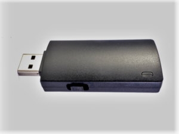
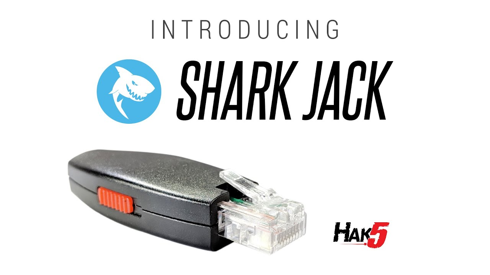

USB Barrier EDD Project Background Research
Table of Contents
The Universal Serial Bus is no doubt one of the most important and successful inventions ever conceived, however, the notion that operating systems by default trust all devices is a dangerous concern. While it brings convenience to the comoplexitiy of translating data through electrical impulses over a wire, it also brings security concerns because the operating system never asks if they are plugging in what they think they are.
Vocab
USB: Universal Serial Bus
Introduction
Many USB devices are trusted by default on computers today. These devices can be easily used for malicious things if you aren’t careful. From electronically destroying your computer to stealing passwords or confidential data, plugging in arbitrary USB devices can lead to massive consequences. How can we defend against these attacks?
Examples
- USB Rubber Ducky
- Bash Bunny

- Shark Jack

- O.MG Cables
Current Solutions
Duckhunt
Duckhunt is software while will supposedly detect USB HID attacks and revoke access to the keyboard.